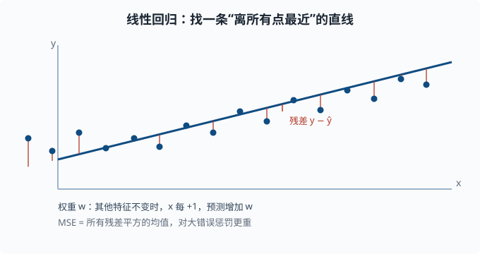

线性回归：最简单也可解释的模型
目标：把四件套中最简单的完整实例走一遍。读完这一页，你能写出线性回归的假设、推导出最小二乘解、理解它的误差假设与局限，并用 sklearn/NumPy 亲手拟合、预测、评估。
为什么先学线性回归
线性回归是理解一切模型的最佳入口：它足够简单，你能完整看到"模型、损失、优化、评估"如何串成一条链；它又足够可解释，系数直接告诉你"每个特征对结果的影响方向和大小"。很多更复杂的模型只是在线性的骨架上加了非线性。
一个关键心态：
线性回归不是"一个公式"，而是一整套假设 + 推导 + 验证。学会它，你就学会了一种"我该信任这个模型到什么程度"的完整思维。
模型：用一条 (超)平面预测
对单个特征 x，线性回归预测：
y_hat = w * x + b
w 是斜率（权重），b 是截距（偏置）。对多个特征 x = (x₁, x₂, ..., x_n)，预测是每个特征乘以对应权重再加总：
y_hat = w₁x₁ + w₂x₂ + ... + w_n x_n + b
用向量写法（01-01 的矩阵乘法）：
y_hat = X·w + b
X: 每行一个样本，每列一个特征
w: 权重向量
b: 偏置（可并入权重，加一列全 1 的特征）
几何上，单一特征时它是一条直线，两个特征时是一个平面，更多特征时是超平面。权重 w_i 的直接含义：其他特征不变时，x_i 每增加 1，预测增加 w_i。这就是它"可解释"的来源。

图中蓝色的点是一个个样本，红色的竖线是每个样本的残差（预测与真实的差距）；目标就是让所有这些残差整体的平方和尽量小。
损失：均方误差 MSE
预测和真实值之间的差距叫残差 y - y_hat。均方误差把所有样本残差的平方取平均：
MSE = (1/n) · Σ (y_i − y_hat_i)²
为什么用平方而不是绝对误差？
- 平方对"大错误"惩罚更重（差 2 是差 1 的 4 倍惩罚）。
- 平滑、处处可导，方便求梯度。
- 在"误差是高斯噪声"的假设下（高斯 = 正态分布的另一个名字，01-02 讲过：大量独立小扰动叠加的结果就是它），最小化 MSE 等价于最大似然估计——"似然"指"在这组参数下，恰好观察到手上这批数据的概率"，最大似然就是挑让这批数据出现概率最大的参数（01-04 的视角）。
代价是它对离群点敏感——一个极端的样本会拉扯整条线。
优化：最小二乘的两种路径
线性回归的优点是：MSE 对参数是凸的（凸函数只有一个"谷底"：不管从哪里出发往下走，最后都落到同一个最低点，不存在中途卡住的局部坑），全局最优唯一。有两种解法：
法一：解析解（闭式解）
把偏置并进权重，记设计矩阵 X（每行一个样本）——之所以叫"设计矩阵"，是因为它的每一列是你设计出来的特征（原始特征、常数 1 等），解析解是：
w = (XᵀX)⁻¹ Xᵀ y
这来自"对 w 求导并令其为 0"。闭式解的意思是"答案能写成一个公式、一步算出"，不需要迭代。它一步到位，但要求 XᵀX 可逆（没有"奇异"问题——奇异指矩阵不可逆，通常因为特征之间线性重复或样本太少），且矩阵求逆在大数据上代价高。
法二：梯度下降（迭代）
对每个参数，沿负梯度更新：
w ← w − η · ∂MSE/∂w
b ← b − η · ∂MSE/∂b
其中 η（学习率）控制步长。梯度下降不要求 XᵀX 可逆，也适用于更大规模的数据——这正是后面深度学习的标配优化方式。
误差假设与信任边界
线性回归给出的置信区间依赖一组假设：
- 线性：真实关系确实是线性的（或近似）。
- 独立性：样本之间不相关。
- 同方差：误差的波动各处相同（不会"这一段预测很准、另一段忽高忽低"）。
- 正态误差：残差近似高斯。
这些假设在真实数据里常常不成立。所以严谨的做法是检查残差：把残差画出来，看是否有明显模式。如果残差有模式（比如弯曲、变大），说明模型漏掉了非线性——线性假设不成立。
这不是说线性回归只能用于完美数据，而是提醒你：一个模型在数据上"拟合得好"，不等于它的假设在数据上成立。 这就是 03-09 要系统诊断的起点。
动手：线性回归完整流程
用随机生成的数据拟合、预测、评估：
import numpy as np
# 生成数据：y = 3x + 2 + 高斯噪声
rng = np.random.default_rng(42)
x = rng.uniform(0, 10, size=100)
y = 3.0 * x + 2.0 + rng.normal(0, 2.0, size=100)
# 用最小二乘解析解（加一列 1 表示偏置）
X = np.stack([x, np.ones_like(x)], axis=1) # (100, 2)
w, *_ = np.linalg.lstsq(X, y, rcond=None)
slope, intercept = w
print(f"拟合: y = {slope:.2f}x + {intercept:.2f}") # 接近 3x + 2
# 预测与 MSE
y_hat = X @ w
mse = ((y - y_hat) ** 2).mean()
print(f"MSE: {mse:.3f}")
用 sklearn 是同行更常用的写法：
from sklearn.linear_model import LinearRegression
model = LinearRegression().fit(x.reshape(-1, 1), y)
print(model.coef_[0], model.intercept_)
从线性到非线性：它为何重要
真实世界很少是纯线性的。线性回归的局限在于它捕捉不到"弯曲"。好在它打开了通往更复杂模型的门：
- 在特征里加入
x²、x³等 → 多项式回归，用线性方法拟合非线性关系。 - 把线性输出接个激活/非线性 → 神经网络的最小单元（04 章）。
- 加个逻辑函数把输出压到
[0,1]→ 逻辑回归（03-03）。
线性回归不是终点，而是"用一套严谨框架从最简单起步"的模板。
思考题
- 线性回归的权重
w_i的直观含义是什么？ - MSE 为什么比绝对误差更常用？代价是什么？
- 线性回归为什么能用解析解一步求解？什么情况下不行？
- 残差出现"弯曲"模式意味着什么？
参考答案
- 在其他特征保持不变时，
x_i每增加 1 个单位，预测值y_hat增加w_i。权重既给出了影响大小，也给出了方向（正/负）。 - 更常用因为平方对大错误惩罚更重、平滑可导、误差呈高斯时等价于最大似然。代价是对离群点敏感：一个极端样本偏差平方后被放大，会显著拉动拟合线。
- 因为 MSE 对参数是凸函数，目标只有一个全局最小值，令梯度为零可解出闭式解
w = (XᵀX)⁻¹Xᵀy。当XᵀX奇异（特征冗余或样本不足）时不可逆，无法用此法；这时用梯度下降或加正则化。 - 意味着线性假设不成立，模型漏掉了数据中的非线性结构。残差"有模式"说明信息还没被模型捕获，应引入非线性特征或换更灵活的模型，而不是继续调线性模型。
下一步
- 想让线性模型做分类 → 03-03 逻辑回归。
- 想理解"为什么更复杂的模型反而更差" → 03-04 偏差-方差与正则化。
- 想补矩阵与最小二乘的数学 → 01-01 线性代数 与 01-08 矩阵分解。